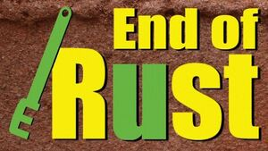

Trade Mark Journal No.2025/032 8 August 2025
WO0000001865848 (2)
Office of origin: Austria
Date of International Registration:15 April 2025
Date of designation in the UK:
15 April 2025

The mark contains the colours yellow and green.
The words End of Rust (yellow) but "u" (green), fictive tool like a spanner in shape of the letter "E" (green).
International priority date claimed: 25 December 2024
(Austria)
- Class 2
- Coating materials in the nature of oils; coating compositions in the nature of oils; coatings for the finishing of surfaces [paints or oils]; coating preparations for protection against rust; anti-rust greases; anti-corrosive preparations for vehicles; anti-rust preparations; products for treating metal surfaces to inhibit rust; paints for protection against corrosion; varnish for the protection of wood from deterioration; undercoating preparations for use on the chassis of vehicles [paints and oil]; wood preservatives; varnish for the protection of wood; corrosion inhibiting materials; paints for protection against corrosion; paints for protection against corrosion; paints for protection against corrosion; anti-rust oils; anti-corrosive products for metals; undercoating for vehicle chassis; anti-rust preparations; anti-rust preparations; anti-rust preparations; anti-corrosive preparations; anti-corrosive preparations; paints for protection against corrosion; anti-rust greases; anti-rust preparations; preparations for the treatment of metal surfaces to resist attack by corrosion; preparations for the treatment of metal surfaces to resist attack by corrosion; preparations for undercoating the exposed surfaces of motor vehicles; rust resisting substances; paints for protection against corrosion; anti-rust preparations; preparations for preserving metal against rust; spray coatings [anti-corrosives]; anti-rust oils; rust preventive substances for application to metal surfaces; preparations for undersealing the exposed surfaces of motor vehicles.
No Real Cloud Marketing Concepts GmbH